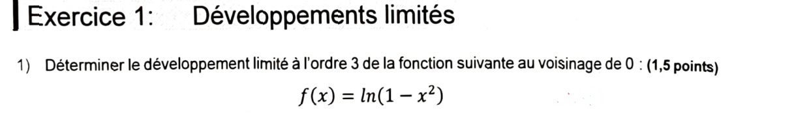
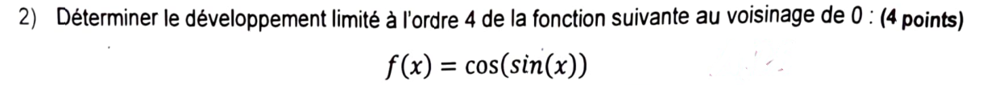
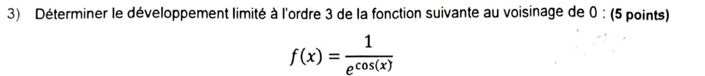
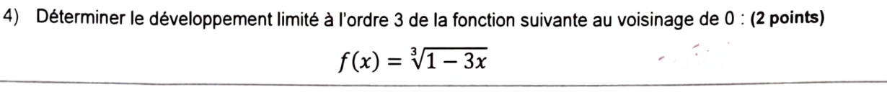
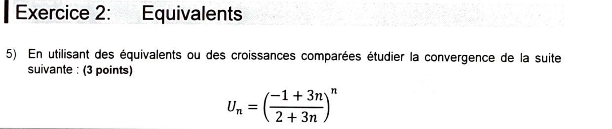
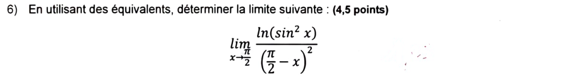

Interrogation n°1 de l'année dernière — corrigé complet
Interrogation n°1 d'A&M2 (jeudi 25 septembre 2025) : 40 min, sur 20 points, aucun document ni appareil électronique. Deux exercices : développements limités (4 questions, 12,5 pts) et équivalents (2 questions, 7,5 pts). Aucun corrigé officiel : tout est résolu ici et vérifié par calcul formel. L'énoncé de chaque question (image) est juste au-dessus de sa correction.
Exercice 1 — Développements limités · 12,5 pts

Cadre. On pose \(u=-x^2\). Quand \(x\to0\), \(u\to0\) : on peut utiliser le DL de \(\ln(1+u)\) en 0.
Formule. \(\ln(1+u)=u-\dfrac{u^2}{2}+\dfrac{u^3}{3}+o(u^3)\).
Calcul. \(u=-x^2\), \(u^2=x^4\), \(u^3=-x^6\). Donc \[ \ln(1-x^2)=-x^2-\frac{x^4}{2}-\frac{x^6}{3}+o(x^6). \] On ne garde que les termes d'ordre \(\le3\) : \(x^4\) et \(x^6\) sont des \(o(x^3)\).
Contrôle. \(\ln(1-x^2)=\ln(1-x)+\ln(1+x)=\big(-x-\tfrac{x^2}2-\tfrac{x^3}3\big)+\big(x-\tfrac{x^2}2+\tfrac{x^3}3\big)+o(x^3)=-x^2+o(x^3)\). ✔

Cadre. On pose \(u=\sin x\). Quand \(x\to0\), \(u\to0\) et \(u\sim x\).
Étape 1 — DL de la fonction extérieure. \(\cos u=1-\dfrac{u^2}{2}+\dfrac{u^4}{24}+o(u^4)\). Comme \(u\sim x\), \(o(u^4)=o(x^4)\).
Étape 2 — DL de \(u=\sin x\) avec la bonne précision. Il faut \(u^2\) à l'ordre 4 : il faut donc connaître \(u\) à l'ordre 3 (car \(u^2=x\cdot x+2x\cdot(\text{terme en }x^3)+\dots\)). \[ u=\sin x=x-\frac{x^3}{6}+o(x^4). \]
Étape 3 — Puissances de \(u\). \[ u^2=\Big(x-\frac{x^3}{6}\Big)^2+o(x^4)=x^2-\frac{x^4}{3}+o(x^4),\qquad u^4=x^4+o(x^4). \]
Étape 4 — Assemblage. \[ \cos(\sin x)=1-\frac12\Big(x^2-\frac{x^4}{3}\Big)+\frac{1}{24}x^4+o(x^4)=1-\frac{x^2}{2}+\Big(\frac16+\frac1{24}\Big)x^4+o(x^4). \] Or \(\dfrac16+\dfrac1{24}=\dfrac{4}{24}+\dfrac1{24}=\dfrac5{24}\).
- Remplacer \(\sin x\) par « \(x+o(x)\) » est trop grossier : dans \(u^2\), le terme \(-\frac{x^4}{3}\) vient du \(-\frac{x^3}{6}\) de \(\sin x\) et il compte à l'ordre 4. Règle : pour \(u^k\) à l'ordre \(N\), il faut \(u\) à l'ordre \(N-k+1\).
- \(4!=24\) (et non 96). \(\frac{u^4}{4!}\) donne \(\frac{x^4}{24}\).

Étape 1 — Simplifier. \(\dfrac{1}{e^{\cos x}}=e^{-\cos x}\).
Étape 2 — DL de \(\cos x\) à l'ordre 3. \(\cos x=1-\dfrac{x^2}{2}+o(x^3)\) (le terme suivant est en \(x^4\)). Donc \[ -\cos x=-1+\frac{x^2}{2}+o(x^3). \]
Étape 3 — Sortir la constante. \(e^{-\cos x}=e^{-1}\cdot e^{v}\) avec \(v=\dfrac{x^2}{2}+o(x^3)\to0\).
Étape 4 — DL de l'exponentielle. \(e^v=1+v+\dfrac{v^2}{2}+o(v^2)\). Ici \(v=\dfrac{x^2}{2}+o(x^3)\) et \(v^2=\dfrac{x^4}{4}+o(x^5)=o(x^3)\). Donc \[ e^v=1+\frac{x^2}{2}+o(x^3). \]
Interprétation. Le DL commence par \(e^{-1}=f(0)\) ; le terme en \(x\) est nul car \(\cos\) est paire (\(f\) est paire).

Cadre. \(\sqrt[3]{1-3x}=(1+u)^{1/3}\) avec \(u=-3x\to0\), donc \(\alpha=\dfrac13\).
Coefficients du binôme généralisé.
\[ \binom{\alpha}{1}=\frac13,\qquad \frac{\alpha(\alpha-1)}{2}=\frac{\frac13\cdot\left(-\frac23\right)}{2}=-\frac19,\qquad \frac{\alpha(\alpha-1)(\alpha-2)}{6}=\frac{\frac13\cdot\left(-\frac23\right)\cdot\left(-\frac53\right)}{6}=\frac{10/27}{6}=\frac{5}{81}. \]Remplacement. \(u=-3x\), \(u^2=9x^2\), \(u^3=-27x^3\) : \[ (1-3x)^{1/3}=1+\frac13(-3x)-\frac19(9x^2)+\frac5{81}(-27x^3)+o(x^3)=1-x-x^2-\frac{5}{3}x^3+o(x^3). \]
Contrôle numérique. \(x=0{,}01\) : \(\sqrt[3]{0{,}97}\approx0{,}98990\) ; le DL donne \(1-0{,}01-0{,}0001-0{,}00000167\approx0{,}98990\). ✔
Exercice 2 — Équivalents · 7,5 pts

Forme indéterminée. La base tend vers 1 et l'exposant vers \(+\infty\) : forme \(1^\infty\). On passe à l'exponentielle : \[ U_n=\exp\big(n\ln(\text{base})\big). \]
Écrire la base comme \(1+\)(quelque chose qui tend vers 0). \[ \frac{-1+3n}{2+3n}=\frac{(2+3n)-3}{2+3n}=1-\frac{3}{3n+2}. \]
Équivalent du logarithme. \(\dfrac{3}{3n+2}\to0\), donc \(\ln\!\Big(1-\dfrac{3}{3n+2}\Big)\sim-\dfrac{3}{3n+2}\) (car \(\ln(1+v)\sim v\) quand \(v\to0\)).
Équivalent de l'exposant. \[ n\ln\!\Big(1-\frac{3}{3n+2}\Big)\sim-\frac{3n}{3n+2}\ \xrightarrow[n\to+\infty]{}\ -1. \] Un équivalent d'une suite qui a une limite finie \(\ell\) a la même limite : l'exposant tend vers \(-1\).
Conclusion. Par continuité de l'exponentielle :
Interprétation. C'est la version « discrète » de \((1-\frac{1}{n})^n\to e^{-1}\) : ici \(\frac{3}{3n+2}\approx\frac1n\).

Changement de variable. On pose \(u=\dfrac\pi2-x\). Alors \(x\to\dfrac\pi2\iff u\to0\), et \(\left(\frac\pi2-x\right)^2=u^2\).
Réécriture. \(\sin x=\sin\!\big(\tfrac\pi2-u\big)=\cos u\), donc \(\sin^2x=\cos^2u=1-\sin^2u\). Ainsi \[ \frac{\ln(\sin^2x)}{\left(\frac\pi2-x\right)^2}=\frac{\ln\!\big(1-\sin^2u\big)}{u^2}. \]
Équivalents. \(\sin^2u\to0\), donc \(\ln(1-\sin^2u)\sim-\sin^2u\). De plus \(\sin u\sim u\) donc \(\sin^2u\sim u^2\) (un équivalent peut être élevé à une puissance). Donc \[ \ln(1-\sin^2u)\sim-u^2. \]
Quotient. Un quotient d'équivalents est un équivalent : \[ \frac{\ln(1-\sin^2u)}{u^2}\sim\frac{-u^2}{u^2}=-1. \]
Contrôle (autre méthode). \(\ln(\sin^2x)=2\ln(\cos u)\) et \(\cos u=1-\frac{u^2}{2}+o(u^2)\), donc \(\ln\cos u=-\frac{u^2}{2}+o(u^2)\) et \(2\ln\cos u=-u^2+o(u^2)\) : on retrouve \(-1\). ✔
- Un équivalent ne s'additionne pas et ne se compose pas avec \(\ln\) en général : on applique « \(\ln(1+v)\sim v\) » seulement quand l'argument est \(1+v\) avec \(v\to0\). Il faut donc d'abord ramener \(\sin^2x\) à la forme \(1-(\text{petit})\), ce que fait \(\sin^2=1-\cos^2\) (ou \(\cos^2u=1-\sin^2u\)).
- Changer de variable avant de chercher des équivalents : on ne peut parler d'équivalents « en 0 » que si la variable tend vers 0.
Bilan — réponses finales
| Question | Barème | Réponse |
|---|---|---|
| Q1 DL₃ \(\ln(1-x^2)\) | 1,5 | \(-x^2+o(x^3)\) |
| Q2 DL₄ \(\cos(\sin x)\) | 4 | \(1-\frac{x^2}{2}+\frac{5}{24}x^4+o(x^4)\) |
| Q3 DL₃ \(1/e^{\cos x}\) | 5 | \(e^{-1}+\frac{e^{-1}}{2}x^2+o(x^3)\) |
| Q4 DL₃ \(\sqrt[3]{1-3x}\) | 2 | \(1-x-x^2-\frac53x^3+o(x^3)\) |
| Q5 \(\left(\frac{-1+3n}{2+3n}\right)^n\) | 3 | converge vers \(e^{-1}\) |
| Q6 limite en \(\pi/2\) | 4,5 | \(-1\) |
- DL composé : poser \(u=\varphi(x)\to0\), DL extérieur en \(u\), puis DL de \(u\) avec la précision \(N-k+1\) pour \(u^k\).
- Forme \(1^\infty\) : passer par \(\exp(n\ln(\dots))\), écrire la base \(1+v\), utiliser \(\ln(1+v)\sim v\), calculer la limite de l'exposant.
- Limite avec \(\ln\) : se ramener à \(\ln(1+v)\) avec \(v\to0\) ; pas d'équivalent sur une somme.
- Point en \(a\neq0\) : poser \(u=x-a\) (ou \(a-x\)) pour revenir en 0.
📂 Documents donnés
Sujet de l'interro tel qu'il figure sur le scan reçu (énoncés nettoyés).
Interro n°1 — 25/09/2025
Les copies scannées annotées (nom et notes d'un autre étudiant) restent en local et ne sont pas publiées : les énoncés ci-dessus sont reconstitués à partir de découpes nettoyées.